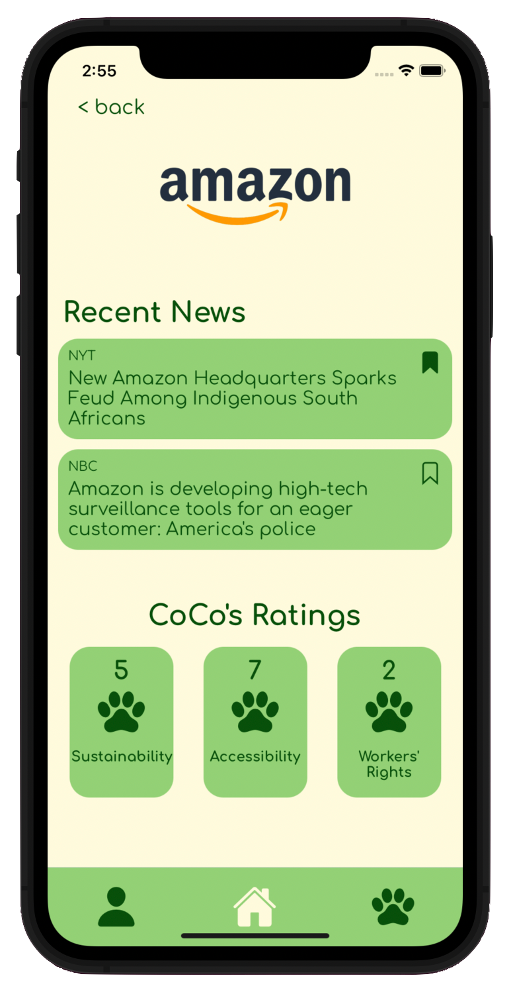
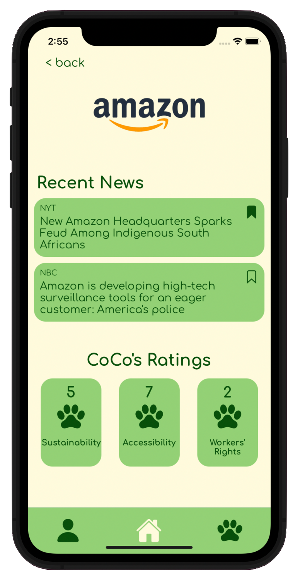

Criticle
Peer critique you can trust
Criticle is a web platform solution that aims to help all kinds of artists easily get reliable critique of their projects digitally, and find a community of other like-minded creators globally.
Users can upload their work and direct what kind of feedback they get with focused prompts, find other similar projects to trade critique, and take advantage of curated lessons to sharpen their critical eye.


Overview
2 week design sprint
Solo design project
On a lazy Saturday in January, the idea for a peer critique platform popped into my head—and off I went.
1. User Research
Talking to several artists in disciplines such as creative writing, music, and visual art showed me the paramount importance of flexibility in how projects are hosted by the design and how users direct one another on what kind of critique they're looking for. After discussing things like the difference between in-person vs. digital critique, synchronous vs. asynchronous critique, prompt-sharing, trust-building, and the emotional rise & fall of critique, I was more convinced than ever a digital solution was promising.
2. POVs & Ideation
By building several POVs of my research participants and understanding where a product could meet their needs, I began making decisions about how my design would take form. I eventually landed on a desktop website solution for asynchronuous critique trading, bolstered by a mutual rating system and tuned recommendations to help users find other artists like themselves.
3. Architecture
Once the solution started to take form, I formalizd all my ideas by building a top-down sitemap and full user flow diagram showing the decision paths of seven unique user personas. This step is what fully solidified the project in my mind and got me excited to prototype.
4. Low-Fi Prototype
Using Figma, I began piecing together a rough wireframe of all my screens and flows. My biggest challenges here were formalizing the project creation input methods (deciding on tag searching was important) and making each page's hierachical structure as visible as possible.
5. Low-Fi Testing
User testing told me without a shadow of a doubt what wasn't working (putting the Learn tab in the user profile section was a clear mistake) and that the visual & conceptual differences between received and completed critiques were not distinguished enough. However, participants also made it clear I was on the right track in terms of my design for trustworthiness and artistic community.
6. UI Kit & Branding
The importance of building trust and giving honest critique led me to prioritize commanding authority with my design, but I also knew the design should not be distracting enough to take away from the artists' projects. These choices laid the foundation of my UI Kit and branding, which took inspiration from vintage manuscripts, wrought iron, and higher education and manifested as ornamental flourishes, inky blue & parchment tan, and literary serif typefaces.
7. Hi-Fi Prototype
In translating my low-fi prototype into more a vivid state, I found subtle ways of incorporating my newer, more stylish design elements while decluttering inessential noise. I incorporated feedback from Low-Fi testing, such as making a dedicated Learn tab, a section for received Crit ratings, and better hierarchical design of the user project page.
8. Usability Testing & Priority Revision
Testing confirmed my feeling that the Hi-Fi prototype was a huge improvement in usability over the Low-Fi, and artists really resonated with the amount of flexibility they're given in project creation and filling out critique forms. Some feedback prompted me to implement small but impactful changes that help users deliver their best critique possible, as well as increasing visibility of some lower-priority information to the home screen.


 
